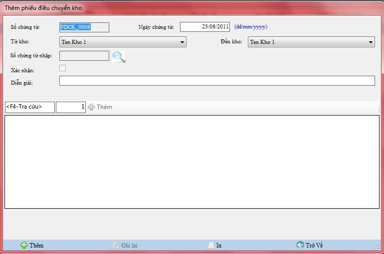
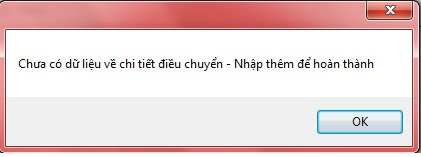

Cách thao tác với quản lý Điều chuyển kho:
Vào Hệ thống ->Điều chuyển kho

Thanh tiêu đề: Chứa tên của nghiệp vụ đang làm việc.
Tìm kiếm: Chọn loại muốn tìm kiếm , bạn nhập vào tên hàng cần tìm .
Thanh công cụ : Chứa các công cụ phục vụ việc quản lý,theo dõi, bổ sung điều chuyển kho
a.Thêm mới
Chọn nút thêm và khai báo các thông tin trên hộp thoại xuất hiện .
- Ô số chứng từ nhập bạn có thể kích đúp chọn nút có hình ảnh chiếc kính lúp hoặc nhấn F4 để chọn Mã hóa đơn nhập , hộp thoại xuất hiện.

- Nhập đầy đủ thông tin vào các ô trống bên trên
- Kích F4 chọn mã hóa đơn nhập nếu muốn Điều chuyển kho theo hóa đơn nhập
- Kích F4 ô trống bên dưới để chọn Hàng hóa.,quét mã vạch hoặc nhập mã hàng hóa nếu muốn điều chuyển kho theo hàng hóa.
- Ở ô trống bên dưới , bạn nhấn F4 để chọn Hàng hóa ,quét mã vạch hoặc nhập mã hàng hóa ,thông tin của hàng hóa đó sẽ được hiển thị lên các ô trống bên cạnh sau khi bạn nhập mã hàng hóa.
- Kích đúp nút thêm bên cạnh các ô thông tin hàng hóa
- Thêm hàng hóa thành công vào Điều chuyển kho ,sẽ có hàng hóa được hiển thị phía dưới
- Kích đúp chọn nút Thêm ở menu dưới để hoàn tất giao dịch .
Điền thông tin của danh mục theo hướng dẫn,những ô bắt buộc phải nhập nếu bạn để trống hệ thống sẽ báo lỗi như hình sau:

- Chọn Trở về ở thanh công cụ dưới để trở về Nghiệp vụ quản lý điều chuyển kho